Appendix Age Acceleration, RNAseq
Parameters
## {
## "host": "C02ZG04PM0XV",
## "nPerm": 40,
## "workers": 41,
## "outliers": {
## "thresholdSD": 3,
## "noOfPCs": 2,
## "removeOutliers": true,
## "shape": "Diagnosis"
## },
## "clustering": {
## "groups": ["Diagnosis", "Sex", "Cohort", "substr(Sample_ID, 1, 1)", "RIN < median(RIN)"],
## "addClustersToModel": 0
## },
## "normalization": {
## "normalize": true,
## "plotColor": "Cohort"
## },
## "imputation": {
## "imputeBetas": false,
## "imputeCounts": false
## },
## "model": {
## "formula": "~ 0 + Diagnosis + Diagnosis:Age + Cohort + Sex + PMI + RIN",
## "formula0": "~ 0 + Diagnosis + Age + Cohort + Sex + PMI + RIN",
## "contrasts": ["DiagnosisControl.Age", "DiagnosisPD.LBD.Age"],
## "svRange": [1, 2, 3, 4, 5, 6],
## "bacon": false
## }
## }Data
Resulting data structure:
## sample genome counts tpm modelData
## [1,] 61 14660 14660 14660 61
## [2,] 8 6 61 61 6Analysis
Outlier identification
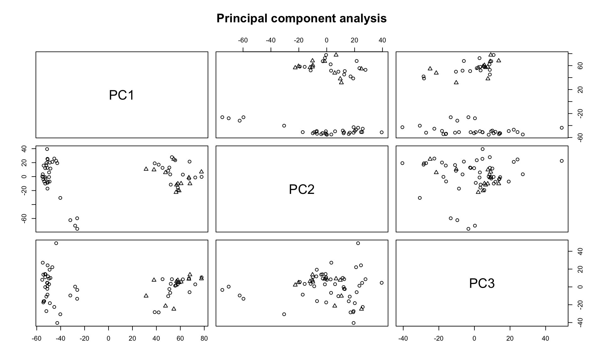
| ID | Sample_ID | Age | Sex | PMI | Diagnosis | RIN | Cohort |
|---|---|---|---|---|---|---|---|
Outliers have been removed.
[1] “untouched tables: genome”
Sample clustering
Hierarchical clustering using correlations as similarity measure and Ward linkage.
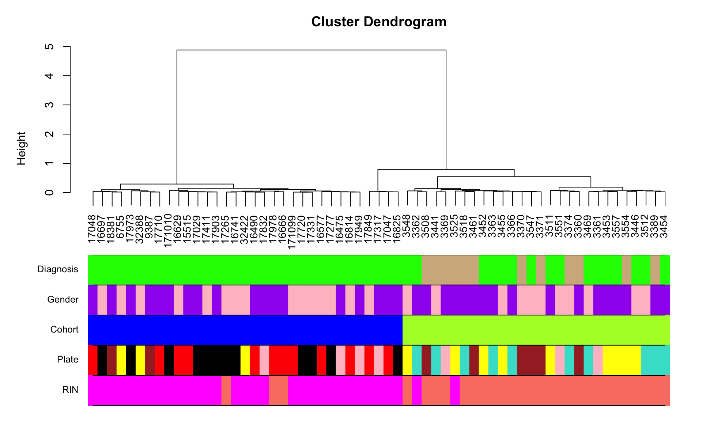
Normalization
Signal density before normalization
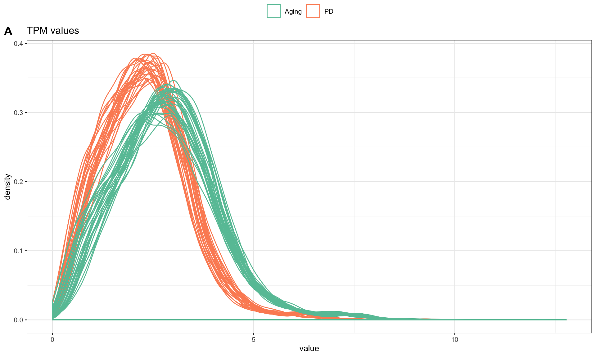
Signals after normalization
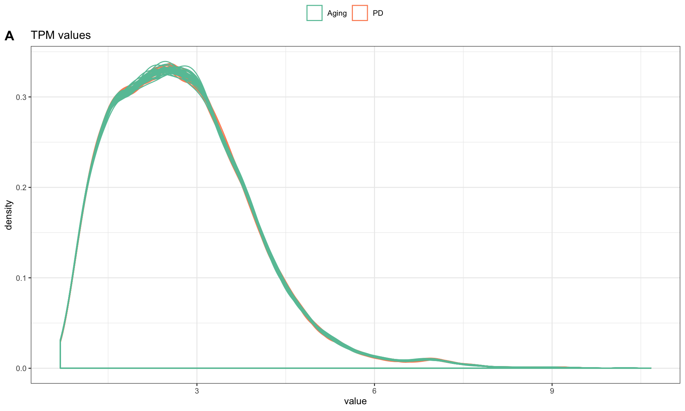
Covariates
Covariates used in subsequent models
## [1] "Diagnosis" "Age" "Sex" "Cohort" "RIN" "PMI"Are any of the covariates related to the variable of interest? (Assuming that the first variable in modelData is the one of interest).
##
## Call:
## glm(formula = formula, family = "binomial", data = data$modelData)
##
## Deviance Residuals:
## Min 1Q Median 3Q Max
## -1.70718 -0.40645 -0.00004 -0.00001 2.01237
##
## Coefficients:
## Estimate Std. Error z value Pr(>|z|)
## (Intercept) -2.889e+01 2.723e+03 -0.011 0.9915
## Age 1.005e-01 4.758e-02 2.112 0.0347 *
## SexF -3.288e-01 9.048e-01 -0.363 0.7163
## CohortPD 1.963e+01 2.723e+03 0.007 0.9943
## RIN 2.011e-01 6.548e-01 0.307 0.7588
## PMI 8.894e-03 3.708e-02 0.240 0.8105
## ---
## Signif. codes: 0 '***' 0.001 '**' 0.01 '*' 0.05 '.' 0.1 ' ' 1
##
## (Dispersion parameter for binomial family taken to be 1)
##
## Null deviance: 60.490 on 60 degrees of freedom
## Residual deviance: 31.814 on 55 degrees of freedom
## AIC: 43.814
##
## Number of Fisher Scoring iterations: 19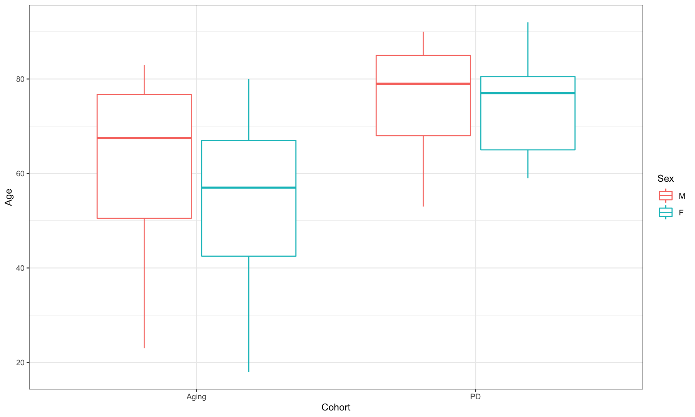
Robust lmFit
rnaseq <- data$tpm
prefix <- "r1_"
modelparams <- list(
variabilityQuantile = 0.1,
voom = TRUE,
downloadDataMatrix = TRUE,
accelerationVariable = "Diagnosis"
)Filter least variable
Removed 1466 of 14660 least variable genes
Perform VOOM
## Voom performed on given counts## Relation of voom normalization factors to other covariates: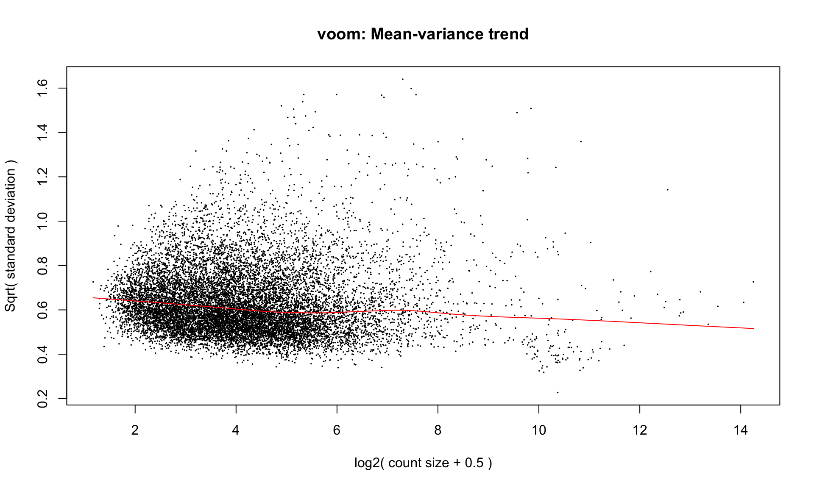
##
## Call:
## lm(formula = dgelist$samples$norm.factors ~ ., data = data$modelData)
##
## Residuals:
## Min 1Q Median 3Q Max
## -0.024780 -0.007904 0.001776 0.008532 0.033557
##
## Coefficients:
## Estimate Std. Error t value Pr(>|t|)
## (Intercept) 1.032e+00 2.524e-02 40.907 <2e-16 ***
## DiagnosisPD/LBD -1.287e-03 5.243e-03 -0.245 0.8071
## Age 2.088e-05 1.114e-04 0.187 0.8520
## SexF -1.927e-04 3.534e-03 -0.055 0.9567
## CohortPD -1.531e-02 7.755e-03 -1.974 0.0535 .
## RIN -3.743e-03 2.975e-03 -1.258 0.2137
## PMI 2.059e-04 2.199e-04 0.936 0.3533
## ---
## Signif. codes: 0 '***' 0.001 '**' 0.01 '*' 0.05 '.' 0.1 ' ' 1
##
## Residual standard error: 0.01338 on 54 degrees of freedom
## Multiple R-squared: 0.094, Adjusted R-squared: -0.006669
## F-statistic: 0.9338 on 6 and 54 DF, p-value: 0.4786Data download
Data PCs vs Covariates
Fit covariates to the PCs using limma
## Removing intercept from test coefficients| DiagnosisPD.LBD | Age | SexF | CohortPD | RIN | PMI | AveExpr | F | P.Value | adj.P.Val | |
|---|---|---|---|---|---|---|---|---|---|---|
| PC1 | 4.0118581 | 0.1465268 | -1.5114595 | 117.503562 | 6.6739973 | 0.6482332 | 0 | 87.5376866 | 0.0000000 | 0.0000000 |
| PC8 | -6.2662064 | 0.0403987 | 2.5218403 | 13.748196 | 0.7130317 | -0.6192528 | 0 | 4.4460728 | 0.0009218 | 0.0046090 |
| PC2 | 0.3437640 | -0.3708833 | 2.2012258 | 19.233166 | -10.3304893 | -0.8980924 | 0 | 3.2671739 | 0.0078008 | 0.0260028 |
| PC9 | 1.2545154 | 0.1355555 | -4.7772464 | -5.197093 | -2.6654203 | -0.1099616 | 0 | 2.1391059 | 0.0624489 | 0.1298970 |
| PC3 | 0.4844373 | -0.2488638 | -1.9084785 | -25.227839 | -13.4410077 | 0.1898210 | 0 | 2.1175791 | 0.0649485 | 0.1298970 |
| PC7 | -1.1123883 | 0.0042921 | 2.3815352 | 6.373656 | -1.1092805 | -0.5066237 | 0 | 1.8258604 | 0.1099583 | 0.1633976 |
| PC4 | -13.2509835 | 0.1346416 | -0.0129134 | -8.129690 | -4.2781962 | 0.3095259 | 0 | 1.8037447 | 0.1143783 | 0.1633976 |
| PC6 | 3.4314073 | 0.0748564 | 0.7603847 | 4.445919 | 6.1652416 | 0.0234727 | 0 | 1.5966703 | 0.1646417 | 0.2058021 |
| PC5 | -1.8896147 | 0.1492864 | 2.9672361 | -9.077725 | -4.0886884 | 0.0969733 | 0 | 0.9514434 | 0.4660491 | 0.5178324 |
| PC10 | -1.3923813 | -0.0867923 | 1.0250241 | -1.876125 | -1.7517609 | 0.0168366 | 0 | 0.7406554 | 0.6191082 | 0.6191082 |
The covariates significantly affecting the PCs using ANOVA:
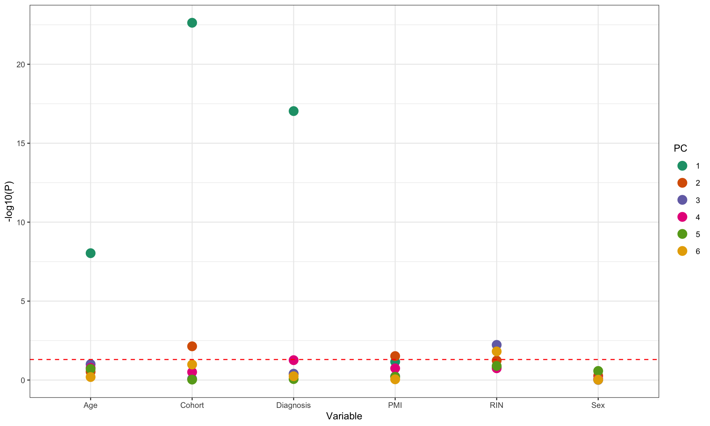
Select the number of SVs
All known covariates are regressed from data and PCA of residuals is computed. The number of PCs that explain more than 5% of variability is used as the desired number of SVs.
## Selected number of SVs 3Probe-level models
P value distribution

Volcano plot
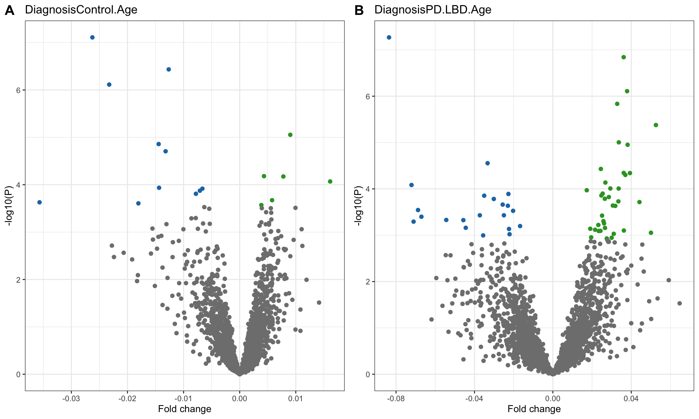
Manhattan plot
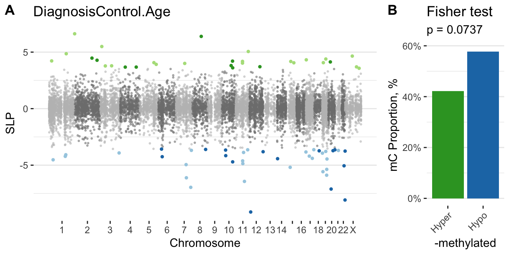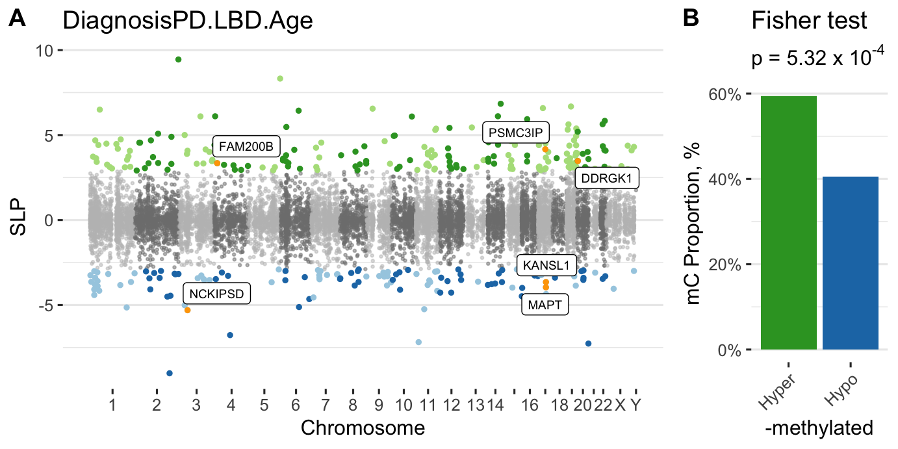
Download fits
Age acceleration
An age predictor is trained and evaluated using 10 fold cross-validation on all the samples. Random forest is used as training algorithm.
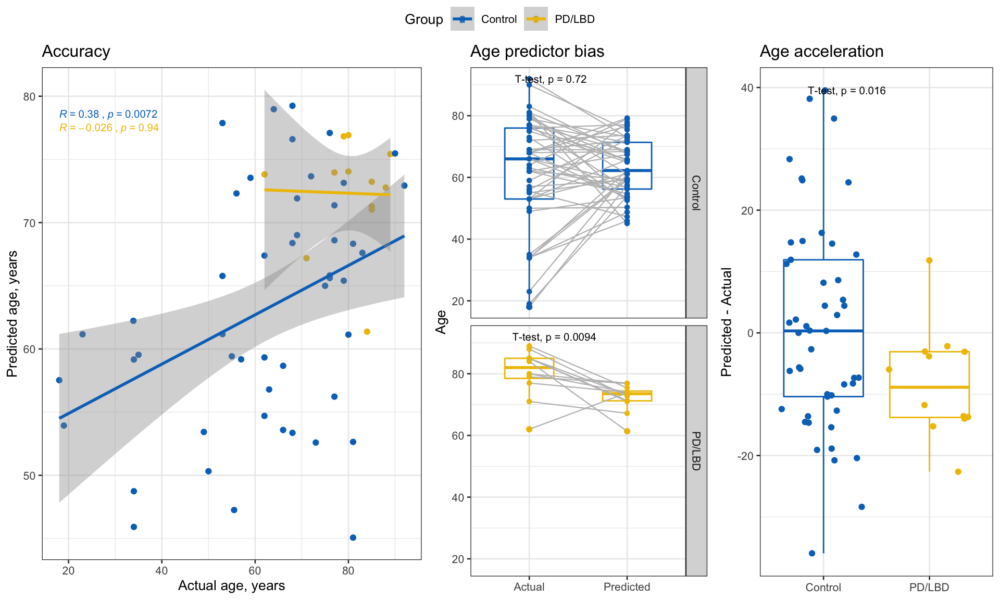
SessionInfo
## R version 3.6.1 (2019-07-05)
## Platform: x86_64-apple-darwin13.4.0 (64-bit)
## Running under: macOS Mojave 10.14.6
##
## Matrix products: default
## BLAS/LAPACK: /opt/anaconda3/envs/ALP/lib/libopenblasp-r0.3.7.dylib
##
## locale:
## [1] en_US.UTF-8/en_US.UTF-8/en_US.UTF-8/C/en_US.UTF-8/en_US.UTF-8
##
## attached base packages:
## [1] parallel stats graphics grDevices utils datasets methods
## [8] base
##
## other attached packages:
## [1] ggsci_2.9 randomForest_4.6-14 caret_6.0-84
## [4] lattice_0.20-38 edgeR_3.28.0 latex2exp_0.4.0
## [7] doSNOW_1.0.18 snow_0.4-3 itertools_0.1-3
## [10] iterators_1.0.12 limma_3.42.0 impute_1.60.0
## [13] WGCNA_1.68 fastcluster_1.1.25 dynamicTreeCut_1.63-1
## [16] glue_1.3.1 foreach_1.4.7 ggpubr_0.2.4
## [19] magrittr_1.5 plotly_4.9.1 ggplot2_3.2.1
## [22] dplyr_0.8.3 data.table_1.12.8 kableExtra_1.1.0
## [25] knitr_1.26 shiny_1.4.0
##
## loaded via a namespace (and not attached):
## [1] backports_1.1.5 Hmisc_4.2-0 plyr_1.8.5
## [4] lazyeval_0.2.2 splines_3.6.1 robust_0.4-18.1
## [7] digest_0.6.23 htmltools_0.4.0 GO.db_3.10.0
## [10] checkmate_1.9.4 memoise_1.1.0 fit.models_0.5-14
## [13] cluster_2.1.0 doParallel_1.0.15 recipes_0.1.8
## [16] readr_1.3.1 gower_0.2.1 matrixStats_0.55.0
## [19] colorspace_1.4-1 blob_1.2.0 rvest_0.3.5
## [22] rrcov_1.4-7 ggrepel_0.8.1 xfun_0.11
## [25] crayon_1.3.4 jsonlite_1.6 zeallot_0.1.0
## [28] survival_2.44-1.1 gtable_0.3.0 ipred_0.9-9
## [31] webshot_0.5.2 BiocGenerics_0.32.0 DEoptimR_1.0-8
## [34] scales_1.1.0 mvtnorm_1.0-11 DBI_1.1.0
## [37] Rcpp_1.0.3 viridisLite_0.3.0 xtable_1.8-4
## [40] htmlTable_1.13.3 foreign_0.8-72 bit_1.1-14
## [43] preprocessCore_1.48.0 Formula_1.2-3 stats4_3.6.1
## [46] lava_1.6.6 prodlim_2019.11.13 htmlwidgets_1.5.1
## [49] httr_1.4.1 RColorBrewer_1.1-2 ellipsis_0.3.0
## [52] acepack_1.4.1 pkgconfig_2.0.3 farver_2.0.1
## [55] nnet_7.3-12 locfit_1.5-9.1 tidyselect_0.2.5
## [58] labeling_0.3 rlang_0.4.2 reshape2_1.4.3
## [61] later_1.0.0 AnnotationDbi_1.48.0 munsell_0.5.0
## [64] tools_3.6.1 generics_0.0.2 RSQLite_2.1.5
## [67] evaluate_0.14 stringr_1.4.0 fastmap_1.0.1
## [70] yaml_2.2.0 ModelMetrics_1.2.2 bit64_0.9-7
## [73] robustbase_0.93-5 purrr_0.3.3 nlme_3.1-141
## [76] mime_0.8 xml2_1.2.2 compiler_3.6.1
## [79] rstudioapi_0.10 ggsignif_0.6.0 tibble_2.1.3
## [82] pcaPP_1.9-73 stringi_1.4.3 highr_0.8
## [85] Matrix_1.2-17 vctrs_0.2.1 pillar_1.4.3
## [88] lifecycle_0.1.0 cowplot_1.0.0 httpuv_1.5.2
## [91] R6_2.4.1 latticeExtra_0.6-28 promises_1.1.0
## [94] gridExtra_2.3 IRanges_2.20.0 codetools_0.2-16
## [97] MASS_7.3-51.4 assertthat_0.2.1 withr_2.1.2
## [100] S4Vectors_0.24.0 hms_0.5.2 grid_3.6.1
## [103] rpart_4.1-15 timeDate_3043.102 tidyr_1.0.0
## [106] class_7.3-15 rmarkdown_1.18 Biobase_2.46.0
## [109] lubridate_1.7.4 base64enc_0.1-3